Every PDF job on a drawing set, in one app.
Tesseract PDF Tools is a PDF app from Tesseract Studio, an architecture practice in Hyderabad. Combine files, make PDFs from pictures, switch layers, add pages and images, and mark up plans with furniture to scale. No sign-up, no payment.
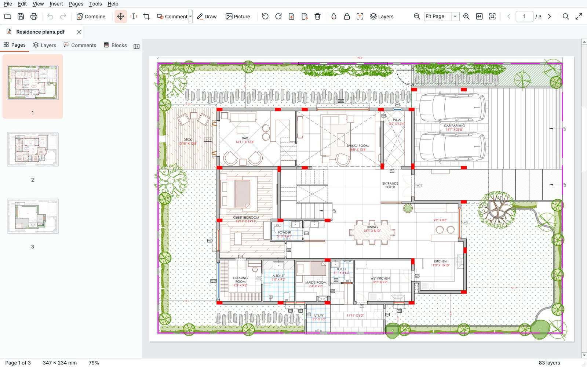
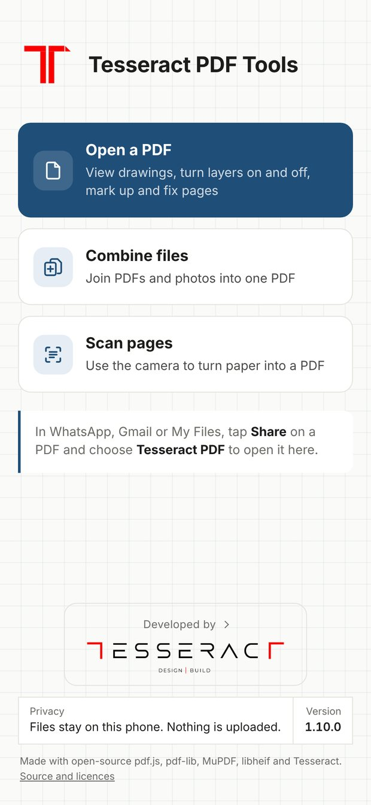
The Windows app, with the phone app beside it.
The jobs you do every day, side by side.
Pick a job to see it in the Windows app and on the phone.
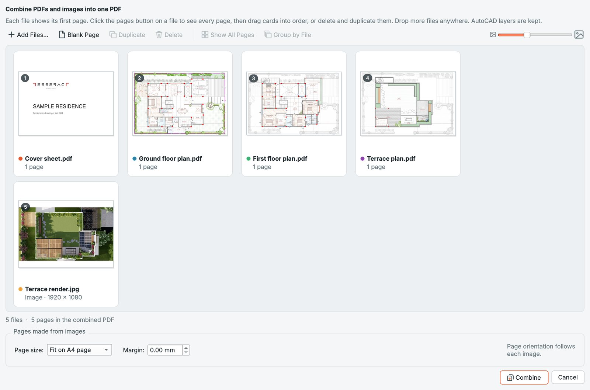
Windows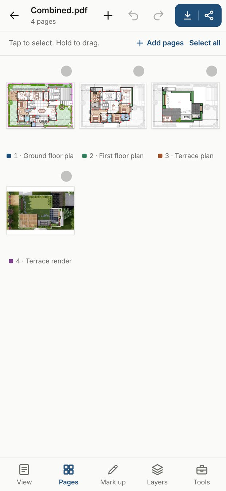
Phone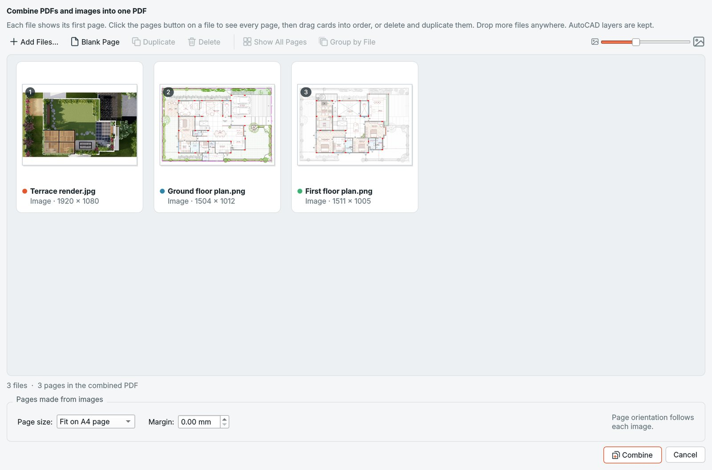
Windows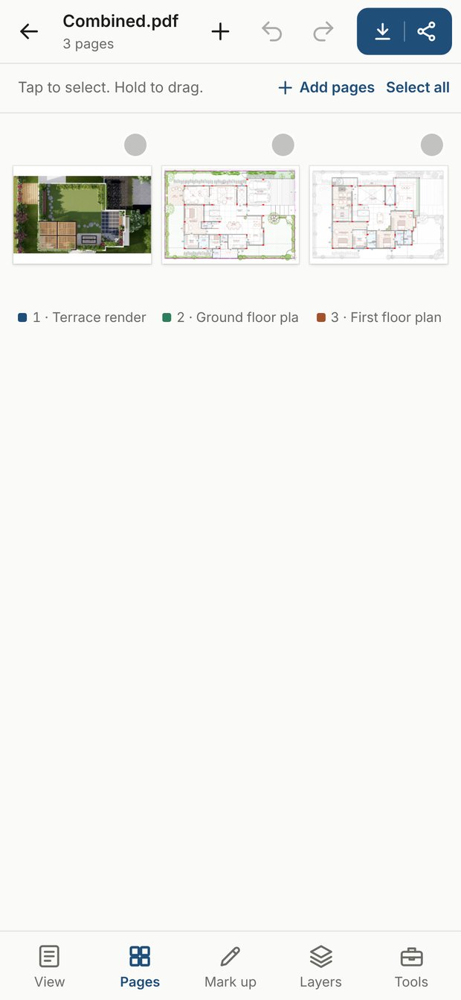
Phone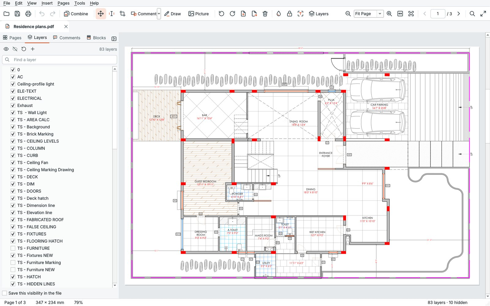
Windows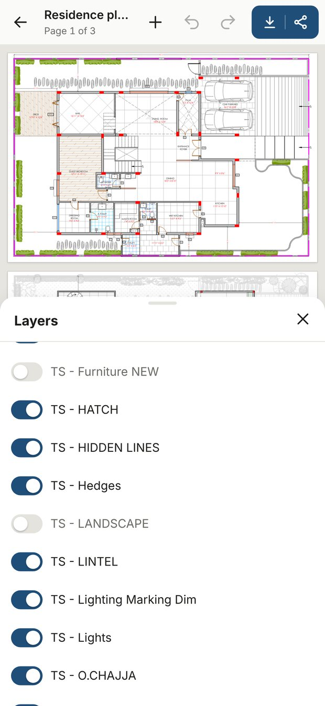
Phone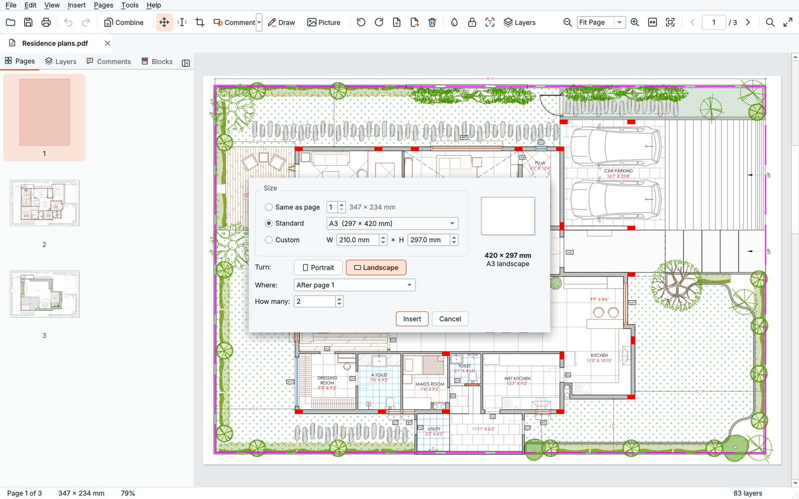
Windows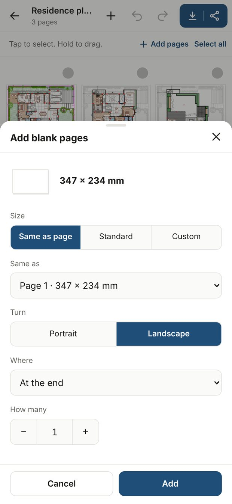
Phone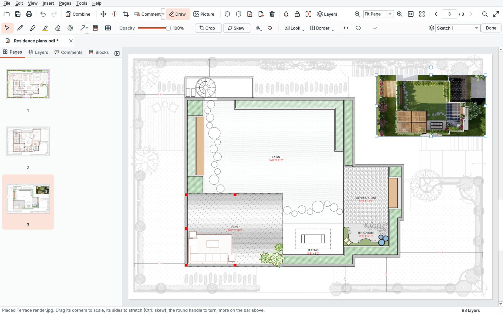
Windows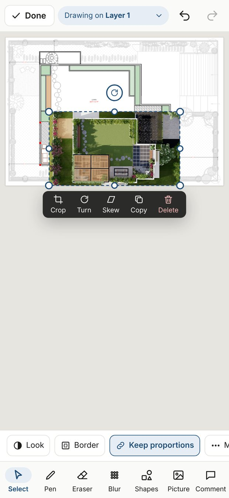
PhoneAnd the rest
Mark up
Pen, marker, highlighter, shapes, comments and blur.
Watermark
Text or a logo across the pages.
Passwords
Add, change or remove a password, and open protected files.
Smaller files
Reduce a PDF's size for WhatsApp and email.
Split
By page range, or one file per page.
Recognise text
Make scanned pages searchable and copyable.
Tables
Insert and edit Excel-style tables on a page.
Scan pages
Turn paper into a PDF with the camera.
Tools an architect reaches for on a plan.
Built by a practice that marks up plans every day.
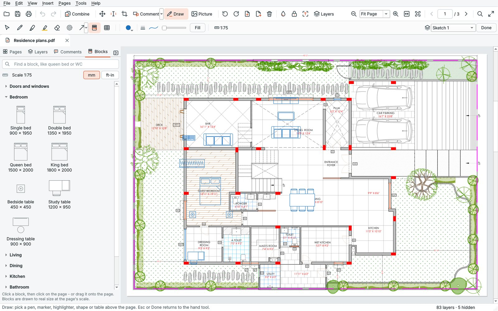
Windows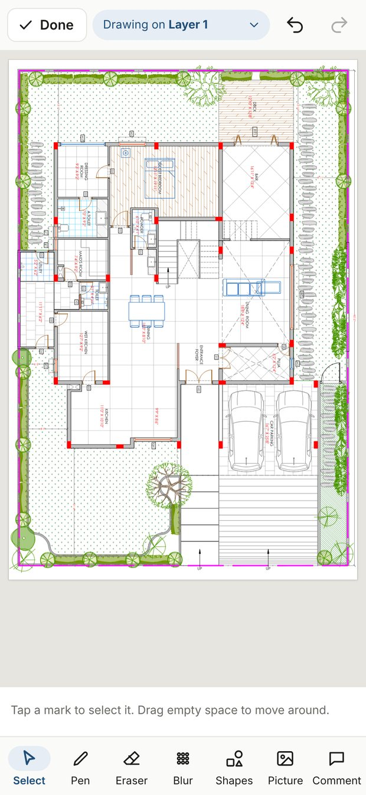
Phone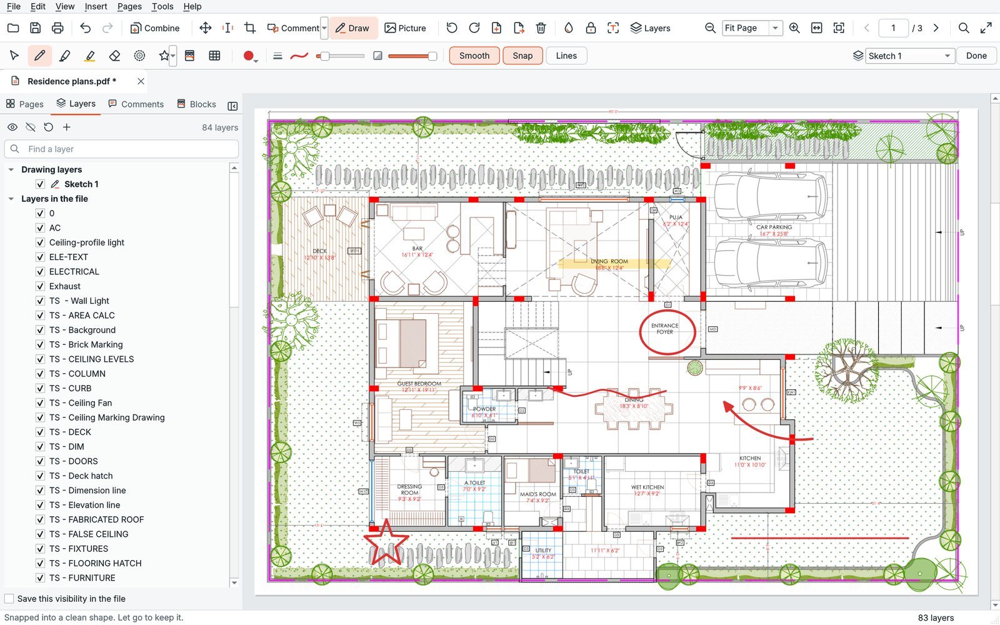
Windows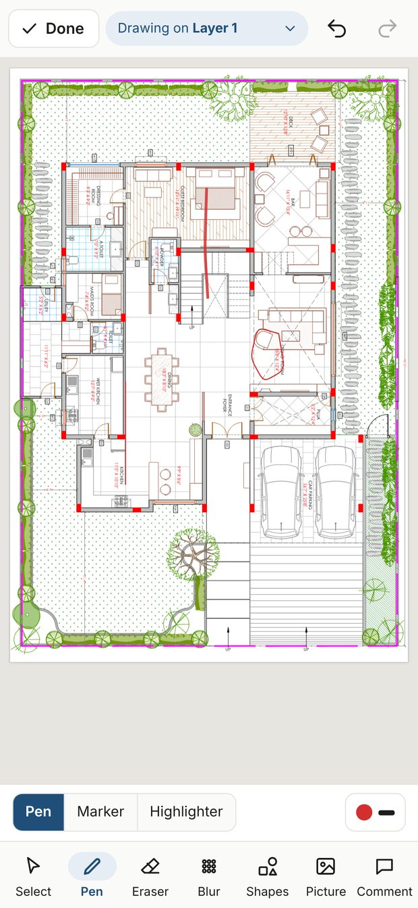
PhoneAlso in the box
Hold to snap
Draw a rough line or shape and hold still at the end. It turns clean.
Drawing layers
Keep each design option on its own layer and compare them on one sheet.
Symbols and your own blocks
North arrow, section and level marks, and blocks of your own saved in My blocks.
Pick the one that fits your device.
Windows 10 and 11
1.7.2 · 34 MB · installs for you alone, no administrator rights needed- Download the setup file and open it.
- If Windows says "Windows protected your PC", click More info, then Run anyway. Windows shows this for new programs until enough people have installed them.
- Follow the steps. It goes in your Start menu, and updates itself from Help › Check for Updates.
Android 7 or newer
1.10.0 · 22 MB · an APK file, installed from outside the Play Store- Download the file, then open it from your notifications or the Downloads folder.
- If Android says installs from this source are blocked, tap Settings and allow it for your browser or Files app.
- Tap Install. Later versions install over this one, and the app offers them itself.
Any phone, nothing to download
The same app as the Android one, opened in your browser. Files stay on your phone.- iPhone: open the link in Safari, tap Share, then Add to Home Screen.
- Android: open it in Chrome and choose Install app from the menu.
Tell us what you made, and what got in your way.
Tesseract PDF Tools grows from the jobs people bring to it. A note about what you needed and couldn't find helps more than you'd think.
tools@tesseractstudio.co